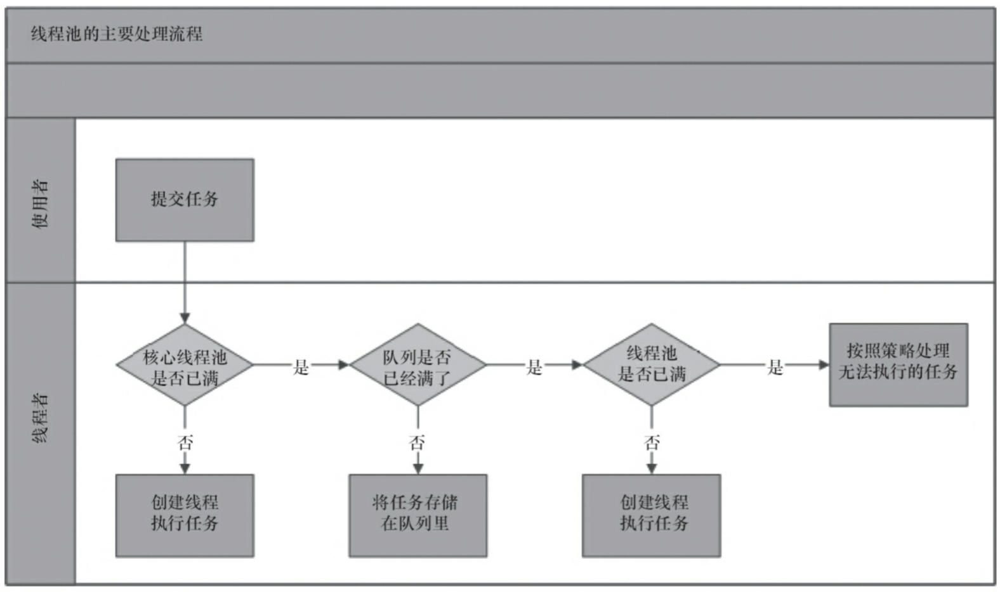
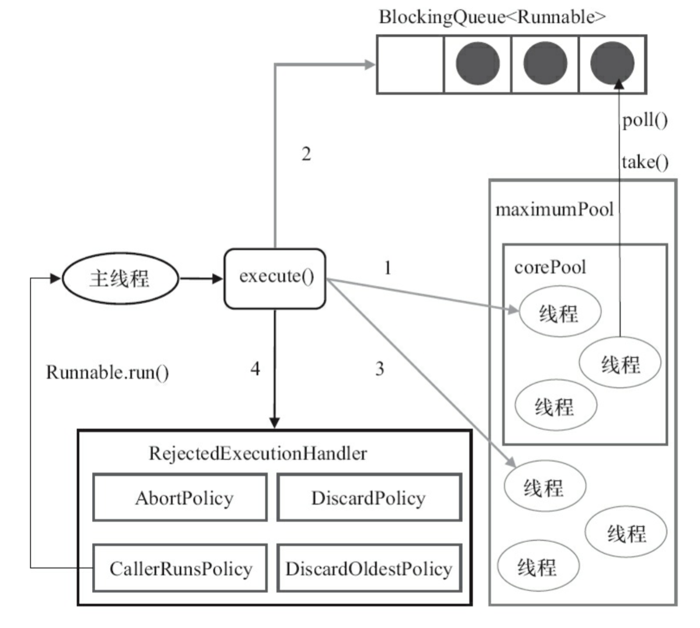
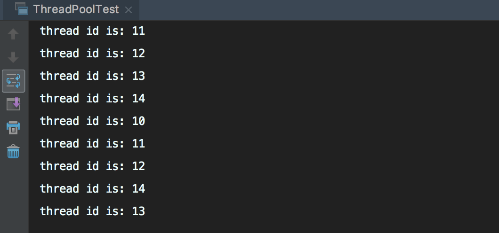
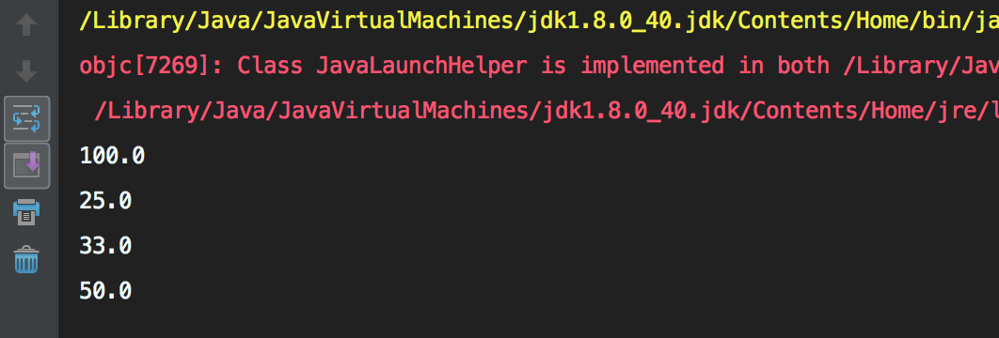

1. 前言
在Java中，我们可以利用多线程来最大化地压榨CPU多核计算的能力。但是，线程本身是把双刃剑，我们需要知道它的利弊，才能在实际系统中游刃有余地运用。
在进入主题之前，我们先了解一下线程池的基本概念。
线程池，本质上是一种对象池，用于管理线程资源。
在任务执行前，需要从线程池中拿出线程来执行。
在任务执行完成之后，需要把线程放回线程池。
通过线程的这种反复利用机制，可以有效地避免直接创建线程所带来的坏处。
我们先来看看线程池带来了哪些好处。
- 降低资源的消耗。线程本身是一种资源，创建和销毁线程会有CPU开销；创建的线程也会占用一定的内存。
- 提高任务执行的响应速度。任务执行时，可以不必等到线程创建完之后再执行。
- 提高线程的可管理性。线程不能无限制地创建，需要进行统一的分配、调优和监控。
接下来，我们看看不使用线程池有哪些坏处。
- 频繁的线程创建和销毁会占用更多的CPU和内存
- 频繁的线程创建和销毁会对GC产生比较大的压力
- 线程太多，线程切换带来的开销将不可忽视
- 线程太少，多核CPU得不到充分利用，是一种浪费
因此，我们有必要对线程池进行比较完整地说明，以便能对线程池进行正确地治理。
2. 线程池实现原理

通过上图，我们看到了线程池的主要处理流程。我们的关注点在于，任务提交之后是怎么执行的。大致如下：
- 判断核心线程池是否已满，如果不是，则创建线程执行任务
- 如果核心线程池满了，判断队列是否满了，如果队列没满，将任务放在队列中
- 如果队列满了，则判断线程池是否已满，如果没满，创建线程执行任务
- 如果线程池也满了，则按照拒绝策略对任务进行处理
在jdk里面，我们可以将处理流程描述得更清楚一点。来看看ThreadPoolExecutor的处理流程。

我们将概念做一下映射。
corePool-> 核心线程池maximumPool-> 线程池BlockQueue-> 队列RejectedExecutionHandler-> 拒绝策略
3. 入门级例子
为了更直观地理解线程池，我们通过一个例子来宏观地了解一下线程池用法。
1 | public class ThreadPoolTest { |
在这个例子中，我们首先创建了一个固定长度为5的线程池。然后使用循环的方式往线程池中提交了10个任务，每个任务休眠1秒。在任务休眠之前，将任务所在的线程id进行打印输出。
所以，理论上只会打印5个不同的线程id，且每个线程id会被打印2次。是不是这样的呢？检验真理最好的方式就是运行一下。我们看看执行结果如何。

4. Executors
Executors是一个线程池工厂，提供了很多的工厂方法，我们来看看它大概能创建哪些线程池。
1 | // 创建单一线程的线程池 |
4.1. 创建单一线程的线程池
故名思意，这个线程池只有一个线程。若多个任务被提交到此线程池，那么会被缓存到队列（队列长度为Integer.MAX_VALUE）。当线程空闲的时候，按照FIFO的方式进行处理。
4.2. 创建固定数量的线程池
和创建单一线程的线程池类似，只是这儿可以并行处理任务的线程数更多一些罢了。若多个任务被提交到此线程池，会有下面的处理过程。
- 如果线程的数量未达到指定数量，则创建线程来执行任务
- 如果线程池的数量达到了指定数量，并且有线程是空闲的，则取出空闲线程执行任务
- 如果没有线程是空闲的，则将任务缓存到队列（队列长度为
Integer.MAX_VALUE）。当线程空闲的时候，按照FIFO的方式进行处理
4.3. 创建带缓存的线程池
这种方式创建的线程池，核心线程池的长度为0，线程池最大长度为Integer.MAX_VALUE。由于本身使用SynchronousQueue作为等待队列的缘故，导致往队列里面每插入一个元素，必须等待另一个线程从这个队列删除一个元素。
4.4. 创建定时调度的线程池
和上面3个工厂方法返回的线程池类型有所不同，它返回的是ScheduledThreadPoolExecutor类型的线程池。平时我们实现定时调度功能的时候，可能更多的是使用第三方类库，比如：quartz等。但是对于更底层的功能，我们仍然需要了解。
我们写一个例子来看看如何使用。
1 | public class ThreadPoolTest { |
scheduleAtFixedRate(Runnable command, long initialDelay, long period, TimeUnit unit)，定时调度，每个调度任务会至少等待period的时间，如果任务执行的时间超过period，则等待的时间为任务执行的时间scheduleWithFixedDelay(Runnable command, long initialDelay, long delay, TimeUnit unit)，定时调度，第二个任务执行的时间 = 第一个任务执行时间 +delayschedule(Runnable command, long delay, TimeUnit unit)，定时调度，延迟delay后执行，且只执行一次
5.手动创建线程池
理论上，我们可以通过Executors来创建线程池，这种方式非常简单。但正是因为简单，所以限制了线程池的功能。比如：无长度限制的队列，可能因为任务堆积导致OOM，这是非常严重的bug，应尽可能地避免。怎么避免？归根结底，还是需要我们通过更底层的方式来创建线程池。
抛开定时调度的线程池不管，我们看看ThreadPoolExecutor。它提供了好几个构造方法，但是最底层的构造方法却只有一个。那么，我们就从这个构造方法着手分析。
1 | /** |
这个构造方法有7个参数，我们逐一来进行分析。
corePoolSize，线程池中的核心线程数maximumPoolSize，线程池中的最大线程数keepAliveTime，空闲时间，当线程池数量超过核心线程数时，多余的空闲线程存活的时间，即：这些线程多久被销毁。unit，空闲时间的单位，可以是毫秒、秒、分钟、小时和天，等等workQueue，等待队列，线程池中的线程数超过核心线程数时，任务将放在等待队列，它是一个BlockingQueue类型的对象ArrayBlockingQueue，基于数组结构的有界队列，此队列按FIFO原则对任务进行排序。如果队列满了还有任务进来，则调用拒绝策略。LinkedBlockingQueue，基于链表结构的无界队列，此队列按FIFO原则对任务进行排序。因为它是无界的，根本不会满，所以采用此队列后线程池将忽略拒绝策略（handler）参数；同时还将忽略最大线程数（maximumPoolSize）等参数。ps:但是查看jdk8源码发现，该策略也是有边界的，边界最大值为：Integer.MAX_VALUESynchronousQueue，不存储元素的阻塞队列，每个插入操作必须等到另一个线程调用移除操作，否则插入操作将一直处于阻塞状态。该队列也是Executors.newCachedThreadPool()的默认队列PriorityBlockingQueue，带优先级的无界阻塞队列
通常情况下，我们需要指定阻塞队列的上界（比如1024）。另外，如果执行的任务很多，我们可能需要将任务进行分类，然后将不同分类的任务放到不同的线程池中执行。
threadFactory，线程工厂，我们可以使用它来创建一个线程handler，拒绝策略，所谓拒绝策略，就是当线程池满了、队列也满了的时候，我们对任务采取的措施。或者丢弃、或者执行、或者其他…CallerRunsPolicy// 在调用者线程执行AbortPolicy// 直接抛出RejectedExecutionException异常DiscardPolicy// 任务直接丢弃，不做任何处理DiscardOldestPolicy// 丢弃队列里最旧的那个任务，再尝试执行当前任务
这四种策略各有优劣，比较常用的是DiscardPolicy，但是这种策略有一个弊端就是任务执行的轨迹不会被记录下来。所以，我们往往需要实现自定义的拒绝策略， 通过实现RejectedExecutionHandler接口的方式。
这些参数里面，基本类型的参数都比较简单，我们不做进一步的分析。我们更关心的是workQueue、threadFactory和handler，接下来我们将进一步分析。
5.1. 线程工厂-threadFactory
ThreadFactory是一个接口，只有一个方法。既然是线程工厂，那么我们就可以用它生产一个线程对象。来看看这个接口的定义。
1 | public interface ThreadFactory { |
Executors的实现使用了默认的线程工厂-DefaultThreadFactory。它的实现主要用于创建一个线程，线程的名字为pool-{poolNum}-thread-{threadNum}。
1 | static class DefaultThreadFactory implements ThreadFactory { |
很多时候，我们需要自定义线程名字。我们只需要自己实现ThreadFactory，用于创建特定场景的线程即可。
6.提交任务的几种方式
往线程池中提交任务，主要有两种方法，execute()和submit()。
6.1 execute
execute()用于提交不需要返回结果的任务，我们看一个例子。
1 | public static void main(String[] args) { |
6.2 execute 关键方法源码分析
1 | public void execute(Runnable command) { |
下面我们继续看看addWorker是如何实现的：
1 | private boolean addWorker(Runnable firstTask, boolean core) { |
addWorker之后是runWorker,第一次启动会执行初始化传进来的任务firstTask；然后会从workQueue中取任务执行，如果队列为空则等待keepAliveTime这么长时间1
2
3
4
5
6
7
8
9
10
11
12
13
14
15
16
17
18
19
20
21
22
23
24
25
26
27
28
29
30
31
32
33
34
35
36
37
38
39
40
41
42
43
44
45final void runWorker(Worker w) {
Thread wt = Thread.currentThread();
Runnable task = w.firstTask;
w.firstTask = null;
// 允许中断
w.unlock(); // allow interrupts
boolean completedAbruptly = true;
try {
// 如果getTask返回null那么getTask中会将workerCount递减，如果异常了这个递减操作会在processWorkerExit中处理
while (task != null || (task = getTask()) != null) {
w.lock();
// If pool is stopping, ensure thread is interrupted;
// if not, ensure thread is not interrupted. This
// requires a recheck in second case to deal with
// shutdownNow race while clearing interrupt
if ((runStateAtLeast(ctl.get(), STOP) ||
(Thread.interrupted() &&
runStateAtLeast(ctl.get(), STOP))) &&
!wt.isInterrupted())
wt.interrupt();
try {
beforeExecute(wt, task);
Throwable thrown = null;
try {
task.run();
} catch (RuntimeException x) {
thrown = x; throw x;
} catch (Error x) {
thrown = x; throw x;
} catch (Throwable x) {
thrown = x; throw new Error(x);
} finally {
afterExecute(task, thrown);
}
} finally {
task = null;
w.completedTasks++;
w.unlock();
}
}
completedAbruptly = false;
} finally {
processWorkerExit(w, completedAbruptly);
}
}
我们看下getTask是如何执行的
1 | private Runnable getTask() { |
下面我们看下processWorkerExit是如何工作的
1 | private void processWorkerExit(Worker w, boolean completedAbruptly) { |
tryTerminate : processWorkerExit方法中会尝试调用tryTerminate来终止线程池。这个方法在任何可能导致线程池终止的动作后执行：比如减少wokerCount或SHUTDOWN状态下从队列中移除任务。
1 | final void tryTerminate() { |
shutdown这个方法会将runState置为SHUTDOWN，会终止所有空闲的线程。shutdownNow方法将runState置为STOP。和shutdown方法的区别，这个方法会终止所有的线程。主要区别在于shutdown调用的是interruptIdleWorkers这个方法，而shutdownNow实际调用的是Worker类的interruptIfStarted方法：
他们的实现如下：
1 | public void shutdown() { |
6.2 submit
submit()用于提交一个需要返回果的任务。该方法返回一个Future对象，通过调用这个对象的get()方法，我们就能获得返回结果。get()方法会一直阻塞，直到返回结果返回。另外，我们也可以使用它的重载方法get(long timeout, TimeUnit unit)，这个方法也会阻塞，但是在超时时间内仍然没有返回结果时，将抛出异常TimeoutException。
1 | public static void main(String[] args) throws Exception { |
7.关闭线程池
在线程池使用完成之后，我们需要对线程池中的资源进行释放操作，这就涉及到关闭功能。我们可以调用线程池对象的shutdown()和shutdownNow()方法来关闭线程池。
这两个方法都是关闭操作，又有什么不同呢？
shutdown()会将线程池状态置为SHUTDOWN，不再接受新的任务，同时会等待线程池中已有的任务执行完成再结束。shutdownNow()会将线程池状态置为SHUTDOWN，对所有线程执行interrupt()操作，清空队列，并将队列中的任务返回回来。
另外，关闭线程池涉及到两个返回boolean的方法，isShutdown()和isTerminated，分别表示是否关闭和是否终止。
8.如何正确配置线程池的参数
前面我们讲到了手动创建线程池涉及到的几个参数，那么我们要如何设置这些参数才算是正确的应用呢？实际上，需要根据任务的特性来分析。
- 任务的性质：CPU密集型、IO密集型和混杂型
- 任务的优先级：高中低
- 任务执行的时间：长中短
- 任务的依赖性：是否依赖数据库或者其他系统资源
不同的性质的任务，我们采取的配置将有所不同。在《Java并发编程实践》中有相应的计算公式。
通常来说，如果任务属于CPU密集型，那么我们可以将线程池数量设置成CPU的个数，以减少线程切换带来的开销。如果任务属于IO密集型，我们可以将线程池数量设置得更多一些，比如CPU个数*2。
PS：我们可以通过
Runtime.getRuntime().availableProcessors()来获取CPU的个数。
9.线程池监控
如果系统中大量用到了线程池，那么我们有必要对线程池进行监控。利用监控，我们能在问题出现前提前感知到，也可以根据监控信息来定位可能出现的问题。
那么我们可以监控哪些信息？又有哪些方法可用于我们的扩展支持呢？
首先，ThreadPoolExecutor自带了一些方法。
long getTaskCount()，获取已经执行或正在执行的任务数long getCompletedTaskCount()，获取已经执行的任务数int getLargestPoolSize()，获取线程池曾经创建过的最大线程数，根据这个参数，我们可以知道线程池是否满过int getPoolSize()，获取线程池线程数int getActiveCount()，获取活跃线程数（正在执行任务的线程数）其次，
ThreadPoolExecutor留给我们自行处理的方法有3个，它在ThreadPoolExecutor中为空实现（也就是什么都不做）。protected void beforeExecute(Thread t, Runnable r)// 任务执行前被调用protected void afterExecute(Runnable r, Throwable t)// 任务执行后被调用protected void terminated()// 线程池结束后被调用
针对这3个方法，我们写一个例子。
1 | public class ThreadPoolTest { |
输出结果如下：
1 | beforeExecute is called |
10.一个特殊的问题
任何代码在使用的时候都可能遇到问题，线程池也不例外。楼主在现实的系统中就遇到过很奇葩的问题。我们来看一个例子。
1 | public class ThreadPoolTest { |
该代码执行的结果如下。

我们循环了5次，理论上应该有5个结果被输出。可是最终的执行结果却很让人很意外–只有4次输出。我们进一步分析发现，当第一次循环，除数为0时，理论上应该抛出异常才对，但是这儿却没有，异常被莫名其妙地吞掉了！
这又是为什么呢？
我们进一步看看submit()方法，这个方法是一个非阻塞方法，有一个返回对象，返回的是Future对象。那么我们就猜测，会不会是因为没有对Future对象做处理导致的。
我们将代码微调一下，重新运行，异常信息终于打印出来了。
1 | for (int i = 0; i < 5; i++) { |
PS：在使用
submit()的时候一定要注意它的返回对象Future，为了避免任务执行异常被吞掉的问题，我们需要调用Future.get()方法。另外，使用execute()将不会出现这种问题。
11.总结
通过这篇文章，我们已经对Java线程池有了一个比较全面和深入的理解。根据前人的经验，我们需要注意下面几点：
- 尽量使用手动的方式创建线程池，避免使用
Executors工厂类 - 根据场景，合理设置线程池的各个参数，包括线程池数量、队列、线程工厂和拒绝策略
- 在调线程池
submit()方法的时候，一定要尽量避免任务执行异常被吞掉的问题